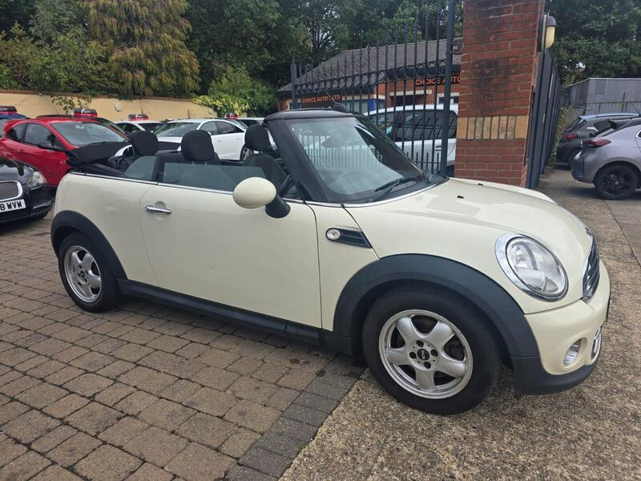
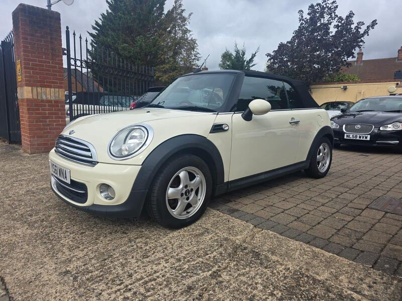
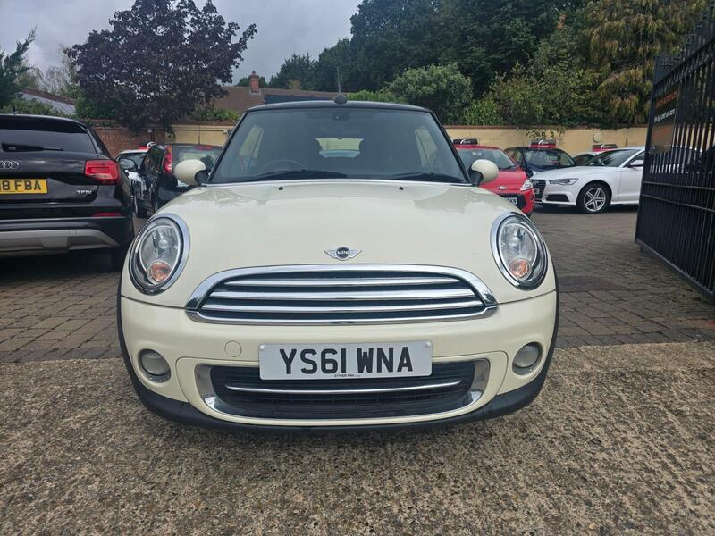
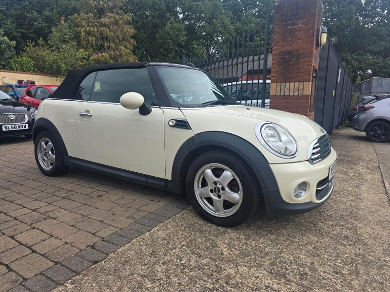

← All 50Ranked #22 of 50




Seller photos from the AutoTrader ad.
✓ Checked 15 Oct
2012 · MINI Convertible
MINI Convertible 1.6 Cooper
A late R57 with a dealer sweetener.
£2,99989,000 miles · Sandhurst · 14 mi from GU7
View on AutoTrader ↗Key facts
| Price | £2,999 |
|---|---|
| Year | 2012 |
| Miles | 89,000 |
| Model | MINI Convertible 1.6 Cooper |
| Colour | White |
| Registration | 2012 (61 reg) |
| Owners | 3 owners |
| Service history | Full |
| MOT (AutoTrader ad) | 4 Apr 2027 (ad) |
| Seller | Trade |
| Location | Sandhurst |
| From GU7 | 14 mi (AutoTrader) |
| Checked | 15 October 2026 |
Why buy it
- 2012 R57, 12 months AA cover (ad)
Things to check
Pre-Nov 2011 timing chain issue shouldn't apply to a 2012 car, but listen for a rattle
Very short ad
- MINI Convertible R52/R57 weak spots
Not flagged as a major issue in our sources; check for water ingress via roof drains and seals. R52 CVT auto fails (avoid); supercharged R52 power-steering pump; pre-Nov 2011 Prince timing-chain tensioners; roof hydraulics £395–495 average repair, R57 roof from ~£1,735.
Seller says (extract)
“12 months AA breakdown cover,2 keys,clean car,lovely drive,no faults.…”